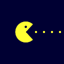
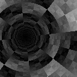
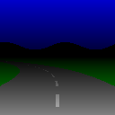

Forth Haiku
mixing math, art and Forth
Brad Nelson built a fun little website, where you write little programs which generate animations (and sound). The programs are written in a subset of Forth (a stack oriented programming language) and can only do very simple operations: there are no loops or conditional statements. You also cannot preserve state across the animation frames, so the end result looks mostly like an animated gif.
These little snippets of code are compiled to javascript or webgl shaders. It's fun to see what people are able to achieve with tiny snippets of deterministic code. I submitted two entries:

: h t pi 21600 / * ; : m h 12 * ; : s m 60 * ; : c pop dup push ; : nx x 0.5 - ; : ny y 0.5 - ; : a 0 c sin - ; : b 0 c cos - ; : l dup * swap dup * + ; : k 0.5 x - a * 0.5 y - b * + ; : p push push push nx a * 0 < ny b * 0 < nx k a * + ny k b * + l pop drop pop < nx ny l pop < * * * ; s 0.0001 0.2 p m 0.0005 0.1 p h 0.0005 0.05 p 1

: c push negate swap negate y x z+ dup * swap dup * + pop dup * < ; : l push -rot negate swap negate y x z+ 2dup dup * swap dup * + pop dup * < push atan2 - abs 0.05 < pop * ; : p dup rot dup sin swap cos rot * -rot * rot + -rot + swap ; : a t 3 * sin ; : b a 1.1 * ; : m x 10 * + + sin 1 over dup * - sqrt atan2 swap / y 0.6 - > ; 0.5 0.7 -1.57 0.3 l 0.5 0.4 -1.57 a + 0.15 l + 0.5 0.4 -1.57 a + 0.15 p -2 b + 0.2 l + 0.5 0.4 -1.57 a - 0.15 l + 0.5 0.4 -1.57 a - 0.15 p -2 b - 0.2 l + 0.5 0.6 -1.57 a + 0.1 l + 0.5 0.6 -1.57 a + 0.1 p -0.5 b + 0.1 l + 0.5 0.6 -1.57 a - 0.1 l + 0.5 0.6 -1.57 a - 0.1 p -0.5 b - 0.1 l + 0.5 0.7 0.05 c + dup 0 swap 15 1 t 2 / m 20 3 t m + 25 0 t 4 / m 35 4 t 4 / m + + y 0.2 > * +
Here is a short selection of my favorite entires. Most of them were authored by Manwe (Alexander Matchugovsky):
Pacman by Manwe
: d dup ; : m 1 min ; : f d floor - ; : c cos abs ; : j t 4 + 2 * x 8 * floor 8 / + 4 * c 2 / t 4 + 2 / c 4 ** * - ; : a 1 x x 8 * floor 0.5 + 8 / - d * y ; : b - d * + sqrt 50 * 8 ** ; : p x t 4 + pi / f 1.6 * - 0.2 + ; : v t 4 + pi 2 * / f ; a j 0.5 b - v d 0.5 < * 4 * m * 1 p d * y 0.5 - d * + 36 * 30 ** m - y 0.5 - p atan2 abs t 10 * c 0.8 * - 16 * m * 0 max a 0.5 b - 0 max d p 16 * < * + p d * y 0.58 b m * v 0.5 >= * + d 0.2
Pong by Manwe

: d dup ; : m 0.4 * 0.5 + - ; : a y - abs 0.1 < x ; : r t swap / d floor - 1.96 * 0.98 - d 0 > 2 * 1 - * 0.01 + ; : e 2.9 r 0.94 * 0.03 + ; : f 3.7 r ; : p f 0.9 * 0.05 + d t ; e x - d * f y - d * + sqrt 0.02 < p 3 * sin m e * - a 0.03 < * p 2 * cos m 1 e - * - a 0.97 > * + + d d
Planet of Zoom by Manwe
( greetings to BradN, Boomlinde, Digimind, DarkstarAG, Ivanq, Vort, Frag_, Stainless, demoscene.ru ) : zoom t 5 / sin 10 / ; : xx x .5 - .8 zoom - * t cos 5 / negate + ; : yy y .3 - .8 zoom - * zoom + ; : a t sin 3 / + ; : line 2dup sin * negate xx + swap a tan * swap yy + swap - 160 * 1 min 0 max ; : wings .025 .12 line .025 -.12 line * -.025 .12 line - -.025 -.12 line - ; : flaps 0.045 .8 line 0.006 .4 line - 0.045 -.8 line 0.006 -.4 line - + + 0 max ; : tail -0.057 0 line xx .065 - yy atan2 a 0 > - xx .065 + yy atan2 a 0 < - 0 max + xx .0065 + yy atan2 a 55 * 1 min 0 max xx .0065 - yy atan2 a 55 * 1 min 0 max - + ; : cut 1 -0.064 0 line - * 0.019 0 line * ; : circle dup 0 a cos * xx - 2 ** swap 0 a sin * yy - 2 ** + - 3999 * 0 max 1 min ; : engine 0.0008 .05 circle + 0.0008 -.05 circle + ; : fire 0.0002 random 8000 / + dup >r .05 circle r> -.05 circle + 5 * ; : run 4 1 y 1.3 * - / t dup floor - 6 * + floor 2 mod dup y 1.6 * + 1 min .6 * swap 0 = y 1.6 * + 1 min .5 * ; : sun 1 x .5 - 2 ** y .94 - 2 ** + .2 ** - ; run sun + wings flaps tail cut engine dup -rot - -rot - dup 0 > fire dup dup >r >r + rot r> + rot r> .65 * + 0 max .27 ** dup .05 < .36 * +
xor tunnel dark by Boomlinde
: x' x 0.5 - t sin 0.2 * + ; : y' y 0.5 - t 1.5 * cos 0.2 * + ; : dist x' x' * y' y' * + sqrt ; : xor + abs 2 mod ; : b / floor 2 mod ; : m 256 * floor ; : a dup rot swap b -rot b xor ; : w dup x' y' atan2 pi / 512 * t 100 * + 256 mod 128 dist / t 500 * + 256 mod rot a * ; 1 w 2 w 4 w 8 w 16 w 32 w 64 w 128 w + + + + + + + 256 / dist * dup dup
Night Road by Manwe
1 y 2 * - x y 2 * 8 ** t 9 / sin * + .5 - abs 2dup > .5 y - * -rot 45 * > 3 1 y 1.8 * - / t 1 mod 6 * + floor 2 mod 1 y 1.8 * - * 4 / * + dup 0 = .5 y - * .75 ** y .5 < * over + over 1 x t 9 / cos + 12 * sin 30 / y .6 - < * + 1.5 y 1.3 * - y .5 > * -
Plasma 256 bytes by Manwe
: m .5 - -4 * ; : l y m pi * t 5 / + cos x m + t 9 / - cos .02 * + swap x m pi * t 3 / + cos y m + t 7 / + cos .02 * + swap ; .3 .6 l l l l l l l l l l l l l l l l l l l l l l l l l l l - dup negate log dup negate swap 3 ** swap over 2 ** + swap 7 / swap
Ink by Manwe
: d dup ; : fract d floor - ; : px x .5 - ; : py y .5 - ; : len px d * py d * + sqrt ; : mix 1 over - z* swap drop ; : f fract 3 over 2 * - over * * ; : power pop d push ; : uvx px py atan2 pi 2 * / .5 + power * ; : uvy len .4 * t .05 * + power * ; : uvz .5 t .01 * + power * ; : v power mod floor ; : uv0x uvx v ; : uv1x uvx 1 + v ; : uv0y uvy v 100 * ; : uv1y uvy 1 + v 100 * ; : uv0z uvz v 10000 * ; : uv1z uvz 1 + v 10000 * ; : vx uv0x uv0y uv0z + + ; : vy uv1x uv0y uv0z + + ; : vz uv0x uv1y uv0z + + ; : vw uv1x uv1y uv0z + + ; : ra .001 * sin 100000 * fract ; : rb uv1z + uv0z - ra ; : r0 vx ra vy ra uvx f mix vz ra vw ra uvx f mix uvy f mix ; : r1 vx rb vy rb uvx f mix vz rb vw rb uvx f mix uvy f mix ; 2 len 6 * - 1.5 2 / 16 push r0 r1 uvz f mix 2 * 1 - * + pop drop ( color correction ) abs sqrt 1 swap - 0 max 1.5 * d 2 ** .4 * over 3 ** .15 * rot ( 3 / d 2.5 * over sqrt ) ( based on “Ball of Fire” GLSL shader by Trisomie21 )
space invader by Boomlinde

: iy 7 y 8 * floor - ; : ix 7 x 8 * floor - ; : . swap 2 * + ; : line swap 2 ix ** / floor 2 mod swap iy = * swap + 0 ; 0 0 0 . 0 . 0 . 1 . 1 . 0 . 0 . 0 . 0 line 0 . 0 . 1 . 1 . 1 . 1 . 0 . 0 . 1 line 0 . 1 . 1 . 1 . 1 . 1 . 1 . 0 . 2 line 1 . 1 . 0 . 1 . 1 . 0 . 1 . 1 . 3 line 1 . 1 . 1 . 1 . 1 . 1 . 1 . 1 . 4 line 0 . 0 . 1 . 0 . 0 . 1 . 0 . 0 . 5 line 0 . 1 . 0 . 1 . 1 . 0 . 1 . 0 . 6 line 1 . 0 . 1 . 0 . 0 . 1 . 0 . 1 . 7 line drop dup